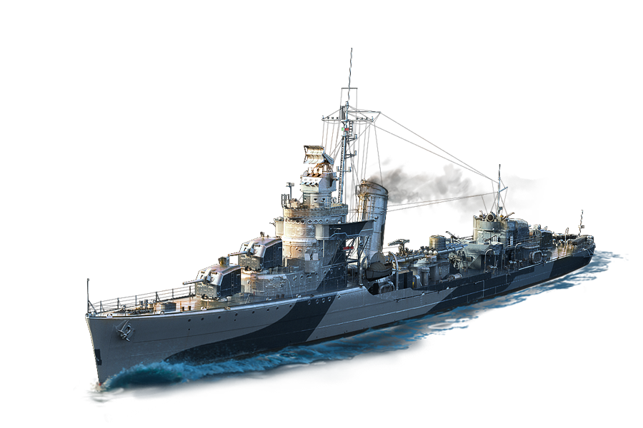
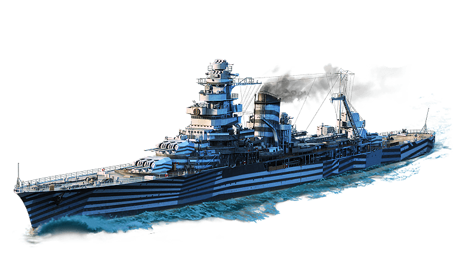
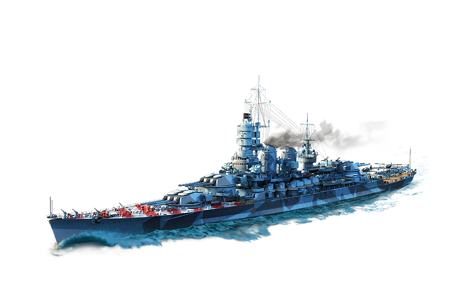
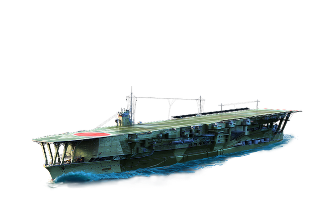

Destroyer
Merupakan kapal perang yang mampu bergerak cepat serta
lincah dalam bermanuver. Fungsi kapal perusak adalah
memproteksi armada kapal perang yang berukuran lebih
besar seperti kapal induk (carrier) atau capital warship
kapal tempur (battleship) atau kapal penjelajah (cruiser)
dari ancaman serangan peralatan perang yang lebih kecil
seperti kapal boat torpedo, kapal selam atau pesawat terbang.


Cruiser
Jenis kapal perang. Istilah ini telah digunakan selama beberapa
ratus tahun, dan memiliki arti yang berbeda sepanjang periode ini.
Selama zaman pelayaran, istilah "jelajah"(cruising) mengacu pada
jenis misi tertentu - patroli independen, perlindungan perdagangan,
atau penyerbuan - bersama dengan fregat dan sloop. Kapal penjelajah
modern umumnya adalah kapal terbesar dalam armada setelah kapal induk,
dan biasanya dapat melakukan beberapa peran.
Battleship
Kapal perang besar berzirah dengan baterai utama yang terdiri atas
meriam berkaliber besar. Kapal tempur lebih besar, dengan persenjataan
dan pelindung yang lebih baik, daripada kapal penjelajah maupun kapal
perusak. Sebagai kapal bersenjata terbesar dalam suatu armada,
kapal tempur digunakan sebagai pemegang komando laut dan melambangkan
puncak kekuatan laut suatu bangsa sejak sekitar tahun 1875 hingga
Perang Dunia II.


Aircraft Carrier
Kapal perang yang memuat pesawat tempur dalam jumlah besar. Tugasnya
adalah memindahkan kekuatan udara ke dalam armada angkatan laut
sebagai pendukung operasi-operasi angkatan laut. Selain itu juga
digunakan sebagai pusat komando operasi dan sebagai kekuatan
detterence atau memberikan efek gentar pada lawan. Sebagai kapal
yang membawa pesawat, kapal induk memiliki fleksibilitas tempur
yang lebih tinggi dibanding jenis kapal perang lainnya.